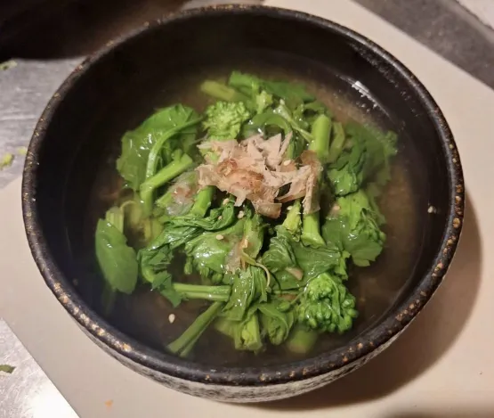
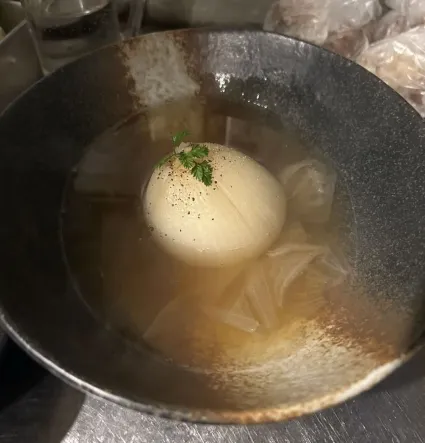
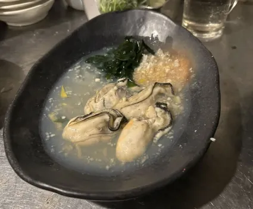
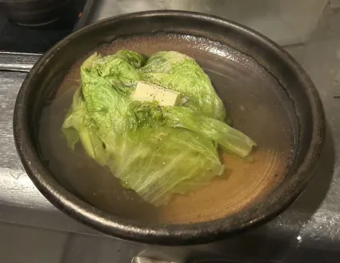
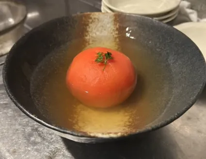
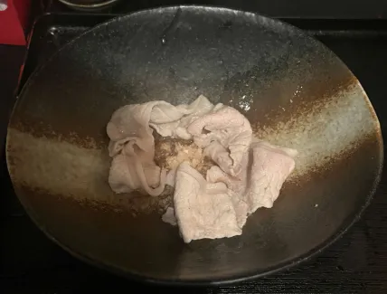
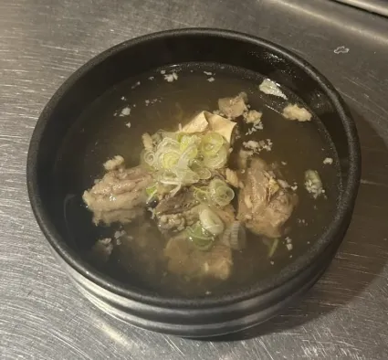

🌼 菜の花の梅おでん
- タッパーに春玉葱1つと浸るくらいのおでん出汁を入れる。

🧅 春玉葱のおでん
- タッパーに春玉葱1つと浸るくらいのおでん出汁を入れる。

🦪 牡蠣のおでん
- 牡蠣4つと出汁を鍋で煮込む。

🥔 里芋
- タッパーに里芋を3~4個入れる。
🥬 レタス
- 120g程度のレタスを出す。

🥦 ブロッコリー
- ブロッコリーを100g程度出す。
🥗 京水菜
- 京水菜を70g程度出す。
🌊 刺身わかめ
- 冷凍庫の刺身わかめを解凍する。
🥟 餃子
- 餃子4つとおでん出汁を煮込む。
🍆 焼きナス
- ナス1本と出汁を一緒に煮込む。
🐙 明石焼き
- タッパーに明石焼きを4つ入れる。
🍅 トマト
- タッパーにトマト1つと浸るくらいのおでん出汁を入れる。

🧊 手造り豆腐
- 豆腐150g程度を食べやすい大きさに切る。
🐷 豚しゃぶ
- 冷凍庫の豚肉を解凍する。

🐮 牛すじ
- おでん出汁と牛すじ1個を煮込む。

🍖 角煮
- 冷凍庫の角煮をレンジで1分解凍する。
🔥 牛ホルモン
- 冷凍庫の牛ホルモンをレンジで1分解凍する。
← トップに戻る